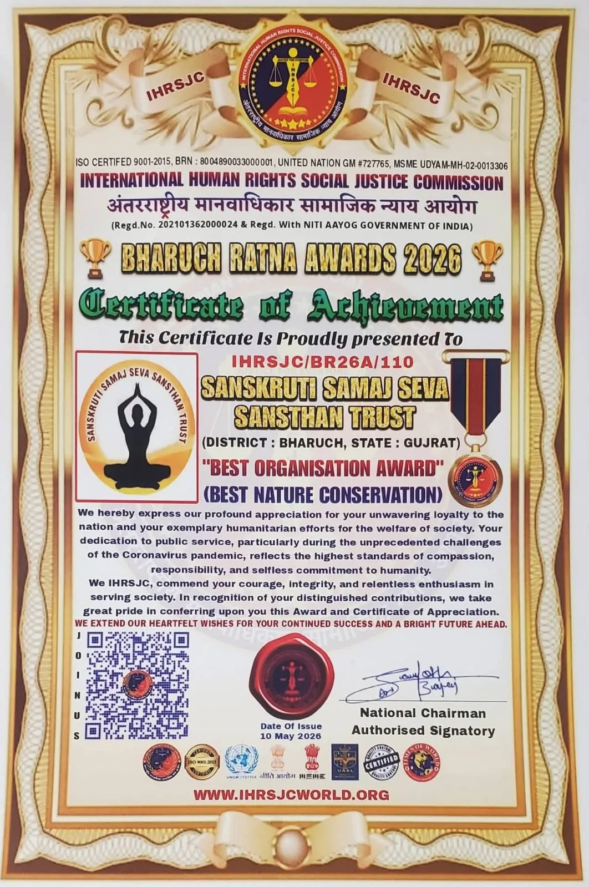
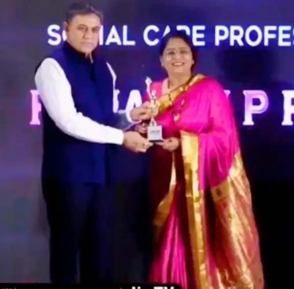
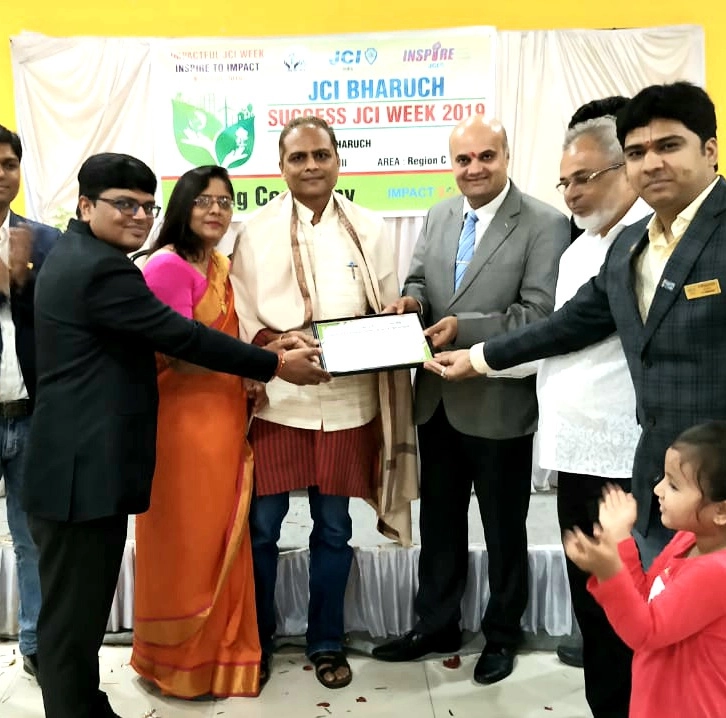
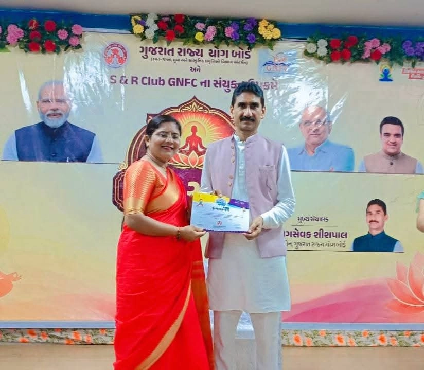
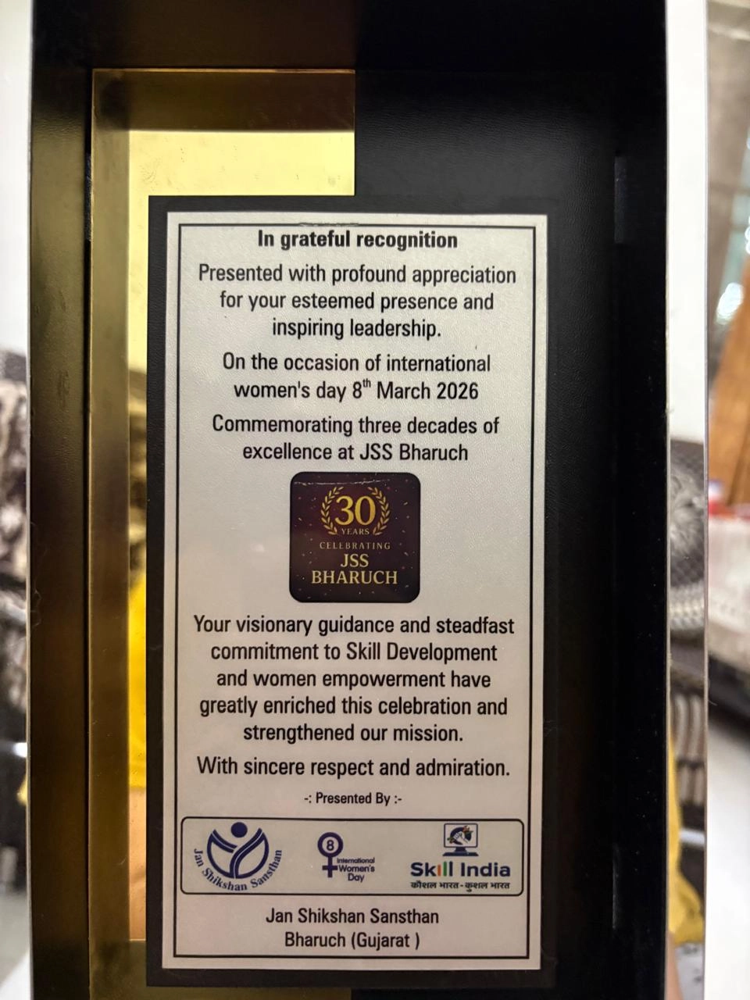
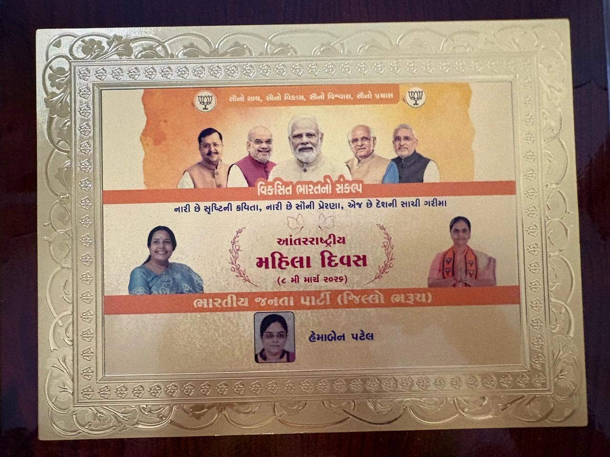
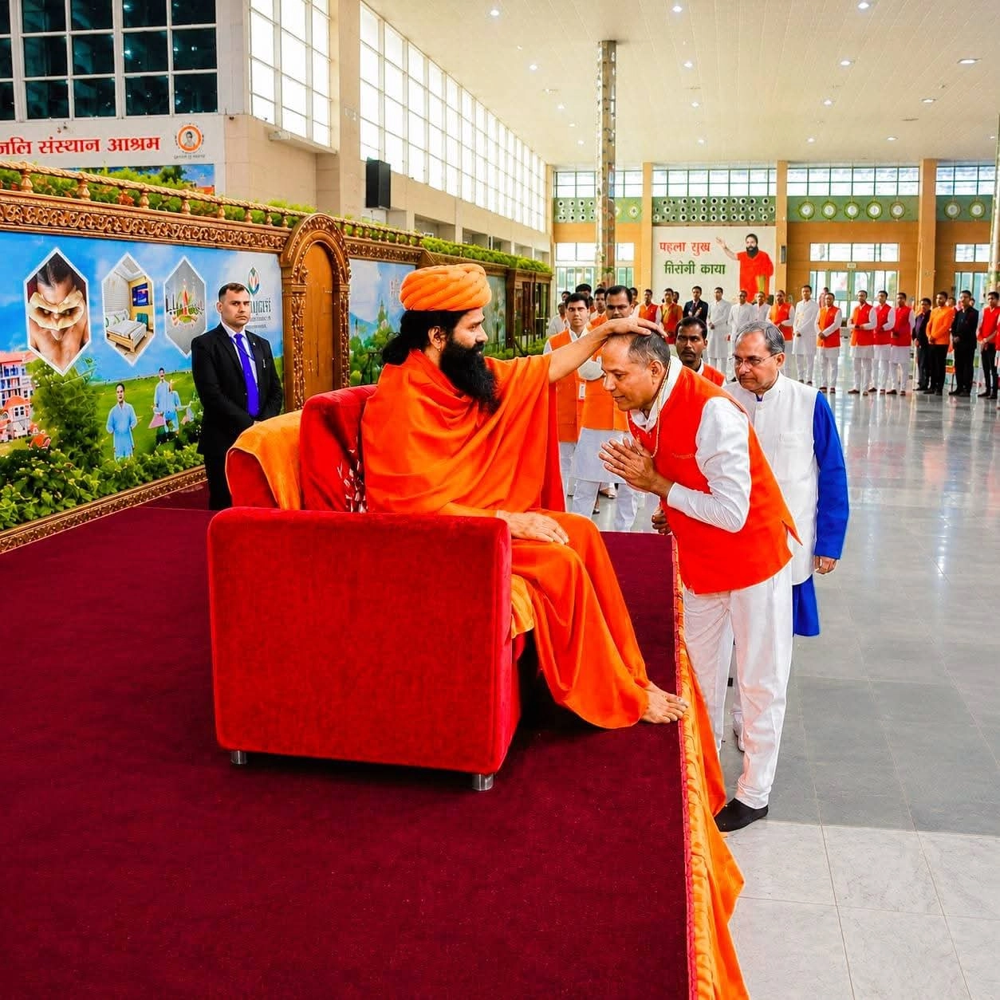
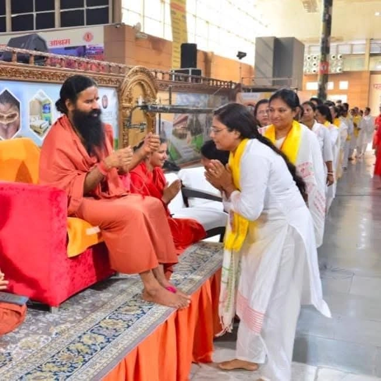

Sanskruti Samaj Seva
Sansthan Trust
Empowering lives through compassionate service, sustainable environmental initiatives, and dedicated community support. Join us in making a lasting impact in Bharuch and beyond.
Our Focus Areas
Sanskruti Samaj Seva Sansthan Trust works across multiple social development sectors to create a positive impact in society. Our initiatives focus on environmental conservation, health and yoga, women empowerment, education, child protection, animal welfare, hunger relief, and community service.
Through awareness programs, volunteer activities, and direct community support, we strive to build a healthier, educated, empowered, and sustainable society for future generations.
MULTI-
DISCIPLINARY
Environment
Health & Yoga
Women Empowerment
Education
Child Protection
Animal Welfare
Hunger Drive
Community Service
Our Core Pillars
Our Mission
To uplift marginalized communities by bridging the gap between available resources and those who need them most, ensuring every individual has access to fundamental support and opportunities.
Our Vision
To create a sustainable and inclusive society where cultural preservation and compassionate community service empower every person to live a life of dignity, health, and self-sufficiency.
Our Values
We are guided by the principles of compassion, integrity, and transparency. Our work is built on the belief that collective action is the key to creating lasting, positive change.
People Helped
Hunger Drives
Trees Planted
Women Empowered
Yoga Camps
Other Endeavours
Projects Per Month
Awards & Recognition

Honored with the 'Best Organisation Award' for Nature Conservation at the Bharuch Ratna Awards 2026 by the International Human Rights Social Justice Commission.

Trust Founder Hemaben Patel receiving the Empowerher 2026 Award from News Capital Gujarat, recognizing our dedicated efforts in women's empowerment and social care.

Recognized for our continued community service endeavors with a certificate of honor by JCI Bharuch during the Impactful JCI Week 2019.

Receiving prestigious recognition from Shri Yog Sevak Shishpal ji Rajput, Chairman of the Gujarat State Yog Board, for our extensive efforts in promoting health and yoga.

Commemorated by Jan Shikshan Sansthan (JSS) Bharuch on International Women's Day 2026 for our steadfast commitment and visionary guidance in skill development.

Acknowledged on International Women's Day 2026 with a special commemorative honor celebrating the inspiring leadership of Hemaben Patel.

A moment of profound spiritual grace receiving the personal blessings and guidance of Param Pujya Yog Rishi Swami Ramdevji Maharaj.

Seeking and receiving the divine blessings of Param Pujya Yog Rishi Swami Ramdevji Maharaj to inspire and fuel our continued journey of social service.